Anabolismo y catabolismo.
contenidofdkdsfl enzimas
pequeño resumen acción
contenidofdkdsfl enzimas
pequeño resumen acción
El aparato digestivo es el responsable de la digestión de los alimentos, es donde se realiza la digestión y absorción de nutrientes.
Cada una de las partes que lo componen tiene una función:
·Es el punto donde comienza la digestión. Los dientes desmenuzan el alimento y rompen la estructura celular de los alimentos, produciéndose la liberación de algunos nutrientes. Además, la saliva ayuda a lubricar y dar forma al bolo alimentario.
Escriba su contenido...

Obra publicada con Licencia Creative Commons Reconocimiento Compartir igual 4.0